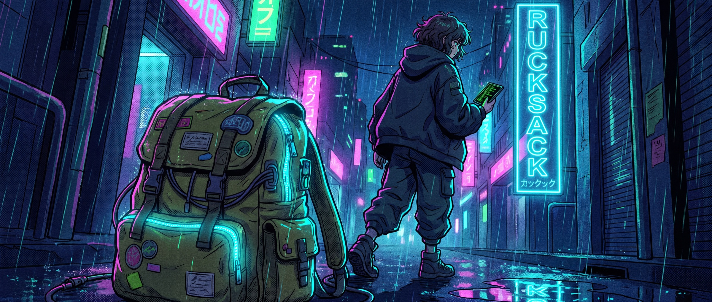

Preflight
rucksack doctor checks battery, internet, hotspot, and agent remotes before you leave.
Rucksack keeps your Mac awake, online, and observable while coding agents run in your bag—so you can keep steering from your phone.
curl -fsSL https://rucksack.sh/install | bash

Rucksack turns a fragile “hope it stays running” moment into a repeatable, reversible run.
rucksack doctor checks battery, internet, hotspot, and agent remotes before you leave.
Keep the host awake with the lid closed, save the previous power setting, and start the watchdog.
Steer from Codex or Claude on your phone. Get alerts if the link, battery, or process needs attention.
Read every line that touches your power settings. Follow tagged releases. Bring the workflow you wish existed.
Explore mkrecny/rucksack →Rucksack makes the risky parts visible, reversible, and easy to inspect. It cannot make a hot laptop cool or notify through a completely dead link—and the docs say so.
Your previous sleep setting is saved, verified, and restored on unpack. recover cleans up interrupted runs.
Optional battery floors restore normal sleep. The watchdog tracks link health, process state, and thermal pressure.
Use --dry-run, read the installer before piping it, or pin a reviewed tagged release such as v0.2.0.